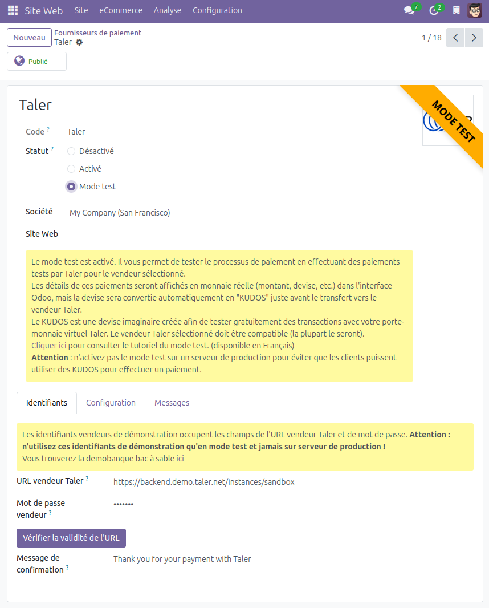
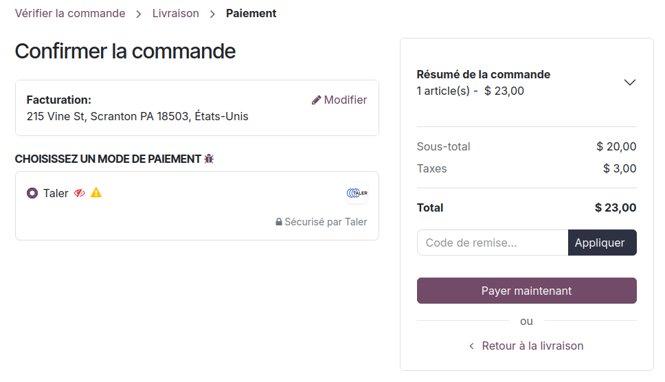
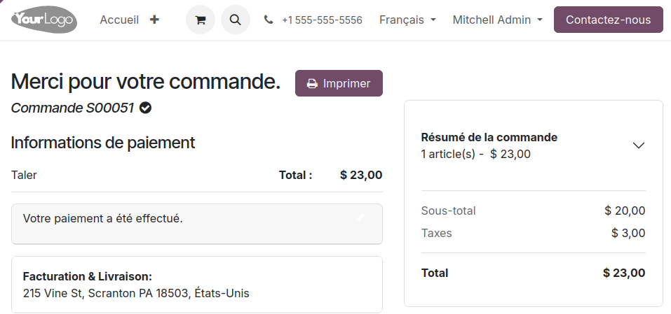

Mode test vendeur¶
Tester l’extension à l’aide du mode test vendeur¶
Le mode test vendeur vous permet de tester l’installation du module et de vous assurer que le vendeur sélectionné fonctionne correctement.
Avertissement
N’utilisez pas ce mode en prduction ou ave des objets publiés pour la vente.
Note
En mode test, vous pouvez passer le fournisseur de paiement en Non publié, ou en Publié en cliquant sur le bouton en haut de la page. Si un fournisseur de paiement est non publié, seules les personnes ayant des droits d’admnistration pourront le voir et l’utiliser. Nous vous conseillons de maintenir le fournisseur de paiment en mode non publié tant que vous utilisez le the mode test.
Note
Dans l’interface Odoo, les données des paiement seront affichées avec leurs valeurs montant, devise, etc.) mais la devise sera automatiquement remplacée par des Kudos juste avant l’envoi de la commande au vendeur Taler.
Voici un exemple du processus de cette fonctionnailté :
Sur la page du fournisseur de paiement, cochez l’option
Mode test.
{kind=link}

Entamez le processus d’un paiement en ligne, l’explication suivant illustre un paiement eCommerce.
Rendez-vous sur la page de la boutique.
Sélectionnez un produit dont vous voulez simuler l’achat, cliquez sur votre panier et entammez le processus de paiment.
Un fois que vous avez confirmé votre commande, le mode de paiement Taler apparaitra à côté de deux icônes.
{kind=link}

Icônes :
L’œil rouge barré signifie
Non publié. Elle vous averti que cette méthode de paiement n’est pas visible par les utilisatrices et utilisateurs du site, seules les personnes disposant des droits d’administration pourront voir le mode test du fournisseur de paiement Taler.Le signe d’avertissement jaune signife
Mode test. Il vous indique que le mode test est activé pour ce mode de paiement.
Effectuez la commande. Une commande correspondante, devise changée, sera créée dans le vendeur Taler.
La devise originale sera changée en
kudos.Le kudo est une monnaie imaginaire créée pour Taler. Elle peut être utilisée pour tester des transactions gratuitement à l’aide de votre porte-monnaie Taler.
Une commande Taler sera créée et vous pourrez y accéder et la payer avec votre porte-monnaie. (Voyez comment la devise a été remplacée par des kudos.)
{kind=link}
Une fois la commande payée à l’aide de la devise imaginaire, le site vous redirigera vers la commande Odoo clôturée.
{kind=link}

Après cette étape, le test est terminé. Vous aurez confirmé que l’extension fontionne et que le serveur vendeur Taleur est capable de recevoir vos commandes pour les devises compatibles.